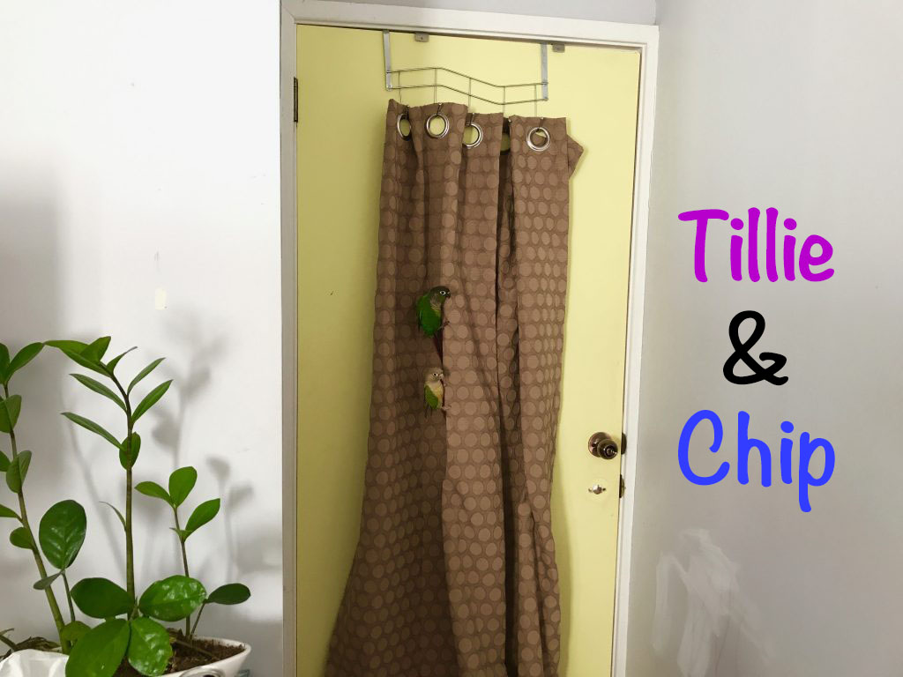

Chirp, chirp, quack! Welcome to our homepage! We are the most adorable green-cheeked conures in Australia! Thank you for taking the time to visit and be sure to check out our adventures and our YouTube Channel. We are Tillie, Pudge and Chip!
❤️ 🦜 ❤️ 🦜 ❤️ 🦜 ❤️